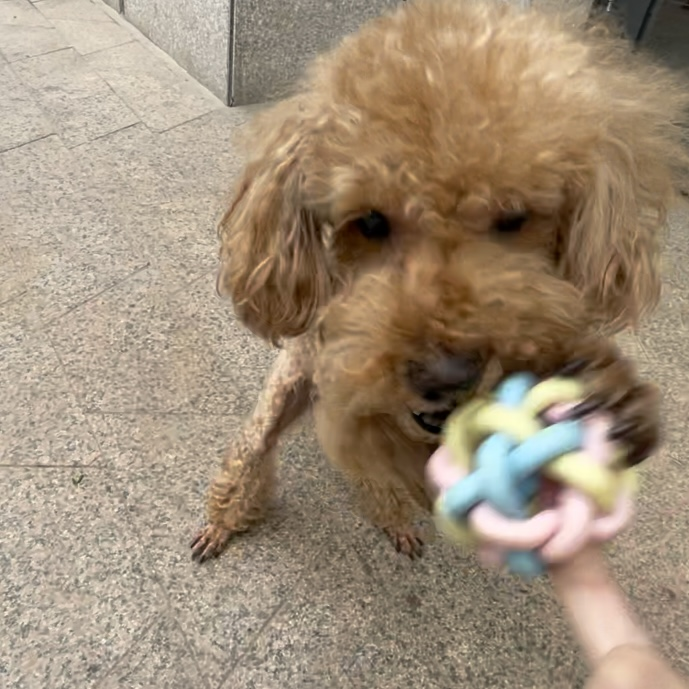

Story_1

Troublemaker
When COCO was a kid, it used to tear paper towels with its mouth, scattering scraps all over the floor. Once when my mother caught it, it ran up the stairs and stuck its head out to confront her.
Story_2
Ball Lover
COCO's favorite thing to play with is the ball. It likes to put the ball in your hand and wait for you to throw it. No matter how far you throw the ball it will take the ball back to your hand again and wait for you to continue to throw the ball, so over and over again tirelessly.
Story_3

Clever Puppy
What is very shocking to me is that COCO knows the time and it knows when I should go to school. If I leave earlier than usual for school COCO does not want me to go out, and when I go out it will always cry in the house. If I go out at a normal time, he will go back to sleep in his nest.